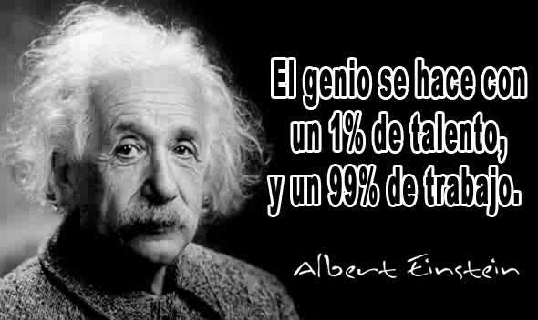

El trading, en pocas palabras, es la compra y venta de activos financieros en los mercados con el objetivo de obtener un beneficio.
Imagina que vas al mercado y compras frutas. Esperas que el precio de las frutas suba, así que las vendes más tarde por un precio más alto y obtienes una ganancia. El trading funciona de manera similar, pero en lugar de frutas, se compran y venden activos como acciones, divisas, materias primas o criptomonedas.
¿Cómo funciona el trading?
Los traders analizan el mercado: para saber cuándo comprar y vender, los traders estudian el comportamiento del mercado y de los activos que les interesan. Utilizan diferentes herramientas y técnicas para ello, como el análisis técnico y el análisis fundamental.
Ejecutan operaciones: una vez que un trader decide comprar o vender un activo, envía una orden a un bróker, que es quien se encarga de ejecutar la operación en el mercado.
Gestionan el riesgo: el trading conlleva riesgos, ya que el precio de los activos puede subir o bajar. Los traders deben gestionar estos riesgos mediante el uso de diferentes herramientas, como las órdenes de stop loss.
Tipos de trading
Existen diferentes tipos de trading, según el plazo de tiempo en que se mantienen las operaciones:
Trading a corto plazo: las operaciones se duran minutos, horas o días.
Trading a medio plazo: las operaciones se duran semanas o meses.
Trading a largo plazo: las operaciones se duran años o incluso décadas.
¿Es el trading para mí?
El trading puede ser una actividad lucrativa, pero también es importante tener en cuenta que conlleva riesgos. Antes de empezar a hacer trading, es importante que:
Comprendas los riesgos: debes ser consciente de que puedes perder dinero en el trading.
Te formes: hay muchos recursos disponibles para aprender sobre trading. Es importante que te formes antes de empezar a operar.
Comiences con poco dinero: no inviertas más dinero del que puedes permitirte perder.
Seas disciplinado: el trading requiere disciplina y paciencia. Es importante que sigas tu plan de trading y no te dejes llevar por las emociones.
Si estás interesado en aprender más sobre trading, hay muchos recursos disponibles en línea y en bibliotecas. También puedes encontrar cursos y talleres de trading que te pueden ayudar a empezar.
Recuerda: el trading no es un esquema para hacerse rico rápidamente. Se requiere tiempo, esfuerzo y disciplina para tener éxito en el trading.

La psicología del trading es un aspecto crucial para el éxito de cualquier operador, ya que influye directamente en cómo se toman las decisiones y se ejecutan las operaciones.
Las emociones humanas como el miedo, la codicia, la esperanza y la complacencia pueden nublar el juicio y llevar a decisiones irracionales que pueden conducir a pérdidas.
Por ello, es fundamental que los operadores comprendan cómo sus emociones pueden afectar su trading y desarrollen estrategias para gestionarlas de manera efectiva.
A continuación, se detallan algunas de las razones por las que la psicología del trading es tan importante:
1. Controlar las emociones:
Miedo: El miedo a perder puede llevar a los operadores a cerrar operaciones prematuramente con ganancias o a evitar realizar operaciones con potencial.
Codicia: La codicia puede incitar a los operadores a mantener posiciones perdedoras con la esperanza de que se recuperen o a entrar en operaciones sin un análisis adecuado.
Esperanza: La esperanza puede llevar a los operadores a aferrarse a una operación perdedora con la esperanza de que eventualmente revierta su tendencia.
Complacencia: La complacencia puede surgir después de una serie de operaciones exitosas, lo que puede llevar a una toma de decisiones descuidada y a un aumento del riesgo.
2. Tomar decisiones racionales:
Disciplina: La disciplina es esencial para seguir un plan de trading y evitar desviarse por las emociones.
Paciencia: La paciencia es necesaria para esperar las oportunidades adecuadas y dejar que las operaciones se desarrollen según su plan.
Objetividad: La objetividad es crucial para evaluar las operaciones de manera imparcial y evitar sesgos emocionales.
3. Mejorar el rendimiento:
Mayor consistencia: Al gestionar las emociones, los operadores pueden tomar decisiones más consistentes y evitar errores costosos.
Reducción de pérdidas: Al controlar el miedo y la codicia, los operadores pueden reducir sus pérdidas y proteger su capital.
Aumento de las ganancias: Al tomar decisiones racionales y disciplinadas, los operadores pueden aumentar sus posibilidades de obtener ganancias a largo plazo.
4. Desarrollar una mentalidad ganadora:
Confianza: La confianza en uno mismo y en su estrategia de trading es esencial para el éxito.
Resilencia: La capacidad de recuperarse de las pérdidas y seguir adelante es crucial para el éxito a largo plazo.
Enfoque: La capacidad de concentrarse en la tarea en cuestión y evitar distracciones es importante para tomar decisiones acertadas.